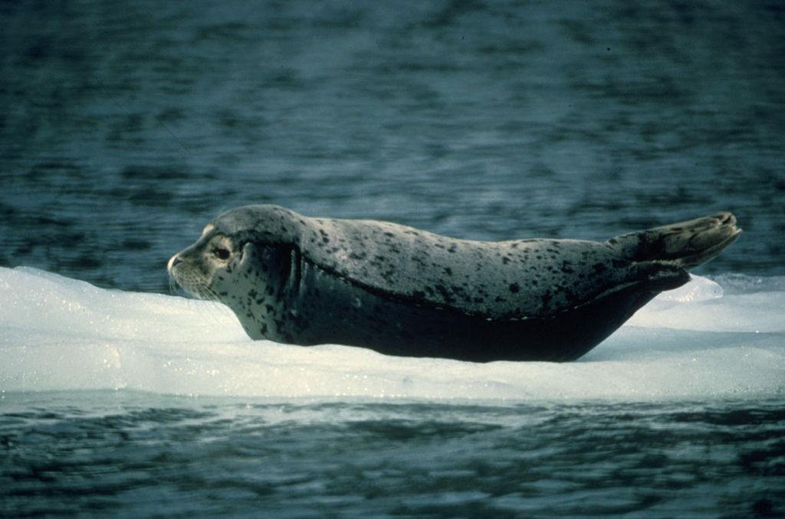
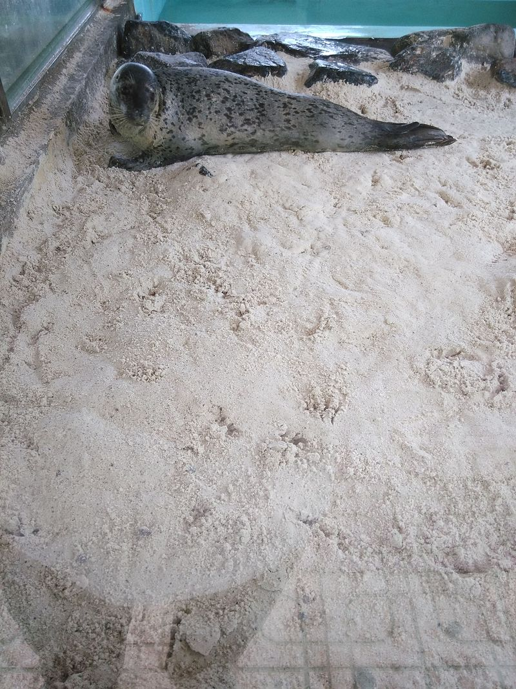

Hải cẩu xám (danh pháp khoa học: Halichoerus grypus) là một loài động vật có vú trong họ Hải cẩu thật sự, bộ Ăn thịt. Loài hải cẩu này được Fabricius mô tả năm 1791.[2] Đây là loài duy nhất trong chi. Con đực dài 2,5–3,3 m (8,2–10,8 ft) và cân nặng 170–310 kg (370–680 lb); con cái nhỏ hơn nhiều, thường dài 1,6–2,0 m (5,2–6,6 ft) và nặng 100–190 kg (220–420 lb). Các cá thể ở tây Đại Tây Dương thường lớn hơn nhiều, con đực nặng 400 kg (880 lb) và con cái nặng đến 250 kg (550 lb)
Ở Tây Bắc Đại Tây Dương, hải cấu xám thường được tìm thấy với số lượng lớn ở các vùng nước ven biển của Canada và phía nam đến khoảng New Jersey trong Hoa Kỳ. Tại Canada, loài hải cẩu này thường thấy trong các khu vực như vịnh St. Lawrence, Newfoundland, Maritimes, và Quebec. Quần thể lớn nhất thế giới tại đảo Sable, NS. Tại Hoa Kỳ, nó được tìm thấy quanh năm ngoài khơi bờ biển của New England, đặc biệt là Maine và Massachusetts, và thường xuyên ít hơn một chút ở các tiểu bang Trung bộ Đại Tây Dương
Hải cầu xám ăn nhiều loại cá, chủ yếu là sinh vật đáy hoặc sinh vật sống gần đáy, được chúng bắt ở độ sâu đến 70 m (230 ft) hoặc nhiều hơn. Lươn cát (Ammodytes spp) (một số loài cá trong các chi Hyperoplus, Gymnammodytes hay Ammodytes) rất quan trọng trong chế độ ăn uống của chúng ở nhiều địa phương. Cod và các gadidae khác, cá bẹt, cá trích[6] và cá đuối[7] cũng quan trọng theo địa phương. Tuy nhiên, điều rõ ràng là hải cẩu xám sẵn sàng ăn sinh vật gì có sẵn, bao gồm cả bạch tuộc[8] và tôm hùm[9]. Lượng thức ăn trung bình cần cho mỗi cá thể trong một ngày ước khoảng 5 kg (11 lb), dù hải cẩu xám không phải ăn hàng ngày và chúng nhịn đói trong mùa sinh sản.
 Hải cẩu con được sinh ra vào mùa thu (tháng chín-tháng mười một) ở đông Đại Tây Dương và vào mùa đông (tháng một-tháng hai) ở phía tây, với bộ lông màu trắng mềm mượt, lúc đầu còn nhỏ, hải cẩu con nhanh chóng béo khi bú sữa của hải cẩu mẹ cực kỳ giàu chất béo. Trong vòng một tháng hoặc lâu hơn, chúng thay lông, phát triển lông dày đặc của hải cẩu trưởng thành và không thấm nước, và rời đất liền xuống biển để tự bắt cá. Trong những năm gần đây, số lượng hải cẩu xám đã gia tăng ở phía tây và Canada đã có các lời kêu gọi bắt bớt hải cẩu.
Hải cẩu con được sinh ra vào mùa thu (tháng chín-tháng mười một) ở đông Đại Tây Dương và vào mùa đông (tháng một-tháng hai) ở phía tây, với bộ lông màu trắng mềm mượt, lúc đầu còn nhỏ, hải cẩu con nhanh chóng béo khi bú sữa của hải cẩu mẹ cực kỳ giàu chất béo. Trong vòng một tháng hoặc lâu hơn, chúng thay lông, phát triển lông dày đặc của hải cẩu trưởng thành và không thấm nước, và rời đất liền xuống biển để tự bắt cá. Trong những năm gần đây, số lượng hải cẩu xám đã gia tăng ở phía tây và Canada đã có các lời kêu gọi bắt bớt hải cẩu.

Tại Hoa Kỳ, số lượng hải cẩu xám đang tăng nhanh. Cho tới năm 1962, Maine và Massachusetts đã cho phép săn hải cẩu thoải mái đến nỗi chỉ một vài quần thểc địa bị cô lập con dấu màu xám ở lại Maine. Sau đó, vào năm 1972 Quốc hội đã thông qua Đạo luật Bảo vệ động vật biển có vú đã ngăn việc làm tổn hại hoặc quấy rối hải cẩu, số lượng hải cẩu xám đã hồi phục. Ví dụ có một quần thể sinh sản lớn gần Mũi Cod, Massachusetts, trong đó số lượng hải cẩu con hồi phục từ một số ít vào năm 1980 đến hơn 2.000 con trong năm 2008. Đến năm 2009, hàng ngàn hải cẩu xám có đến cư trú trên hoặc gần bãi biển phổ biến khi cá mập trắng lớn bắt đầu săn bắn chúng ở gần bờ[10]. Hải cẩu xám cũng được nhìn thấy gia tăng ở các vùng biển New York và New Jersey và người ta mong đợi chúng sẽ tạo lập các quần thể xa hơn về phía nam. Tại Vương quốc Anh, hải cẩu được bảo vệ theo Đạo luật Bảo tồn Hải cẩu 1970, tuy nhiên nó không áp dụng cho Bắc Ai-len. Tại Anh cũng đã có các lời kêu gọi bắt hải cẩu từ một số ngư dân, tuyên bố rằng số lượng cá đã giảm do những con hải cẩu.